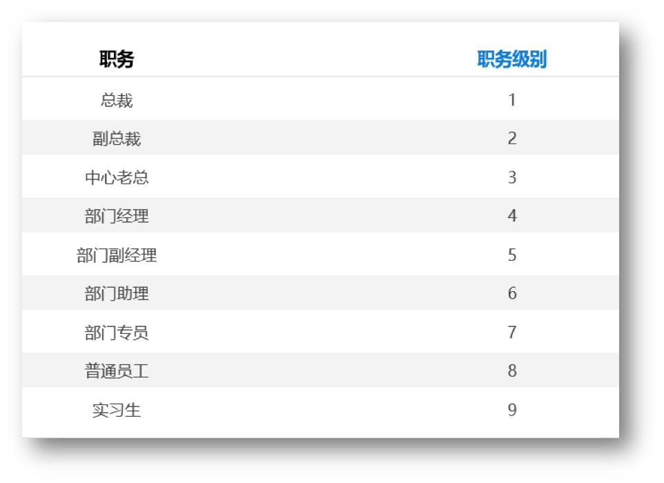

级别越小权限越大，在地址本选择的时候，不显示超过当前用户5级的用户。
举例：普通员工（8级）打开地址本仅显示中心老总（8级-5级）以下级别的人员；
实习生（9级）打开地址本仅显示部门经理（9级-5级）以下级别的人员。

级别越大权限越大，在地址本选择的时候，不显示超过当前用户5级的用户。
举例：普通员工（2级）打开地址本仅显示中心老总（2级+5级）以下级别的人员；
实习生（1级）打开地址本仅显示部门经理（1级+5级）以下级别的人员。
注意：职级过滤是在组织可见性过滤的基础上再进行一次过滤，地址本显示的最终结果为组织可见性过滤和职级过滤的交集。